Steward
分享是一種喜悅、更是一種幸福
掌機 - Gaviar (小志掌機) - 拆機(v2)
第二版的機器新增兩顆振動馬達(感謝暈哥以及lovexulu)
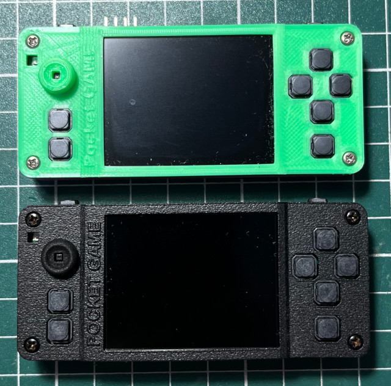
在Pyra掌機的身旁，更是感覺小巧
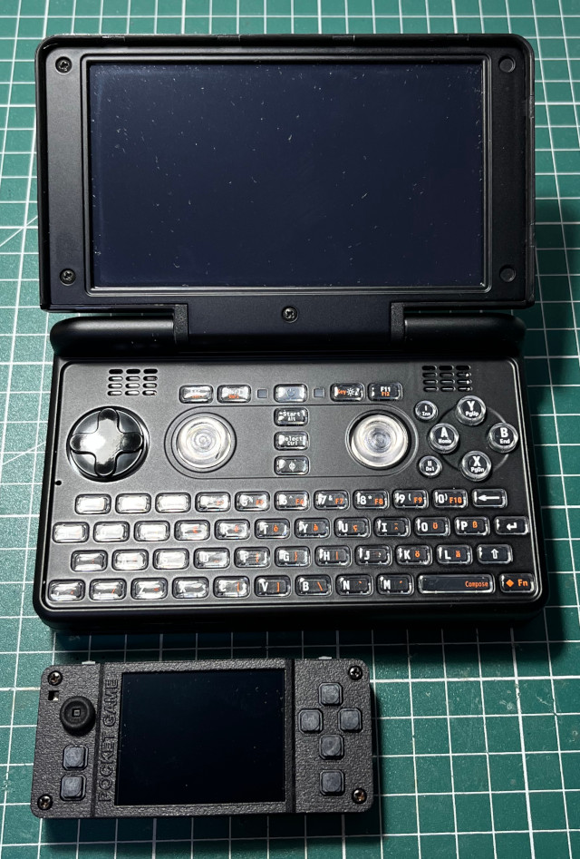
材質還不錯
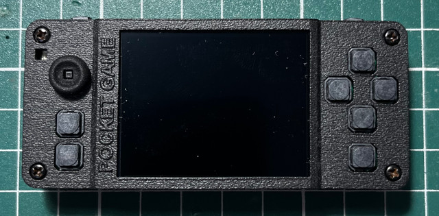
USB Type-C、耳機孔
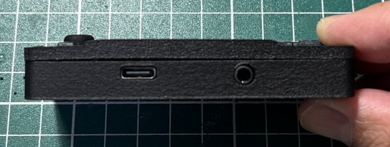
電源開關
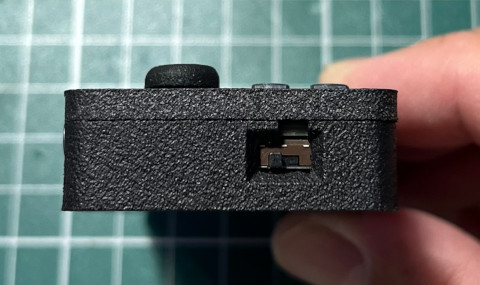
R、MicroSD、L
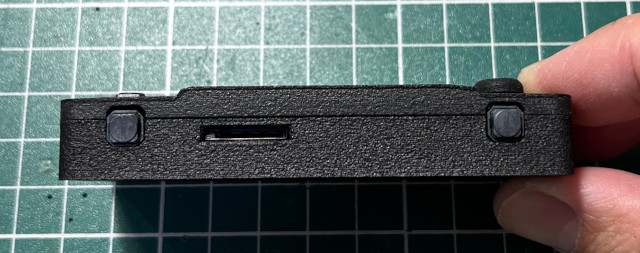
音量鍵
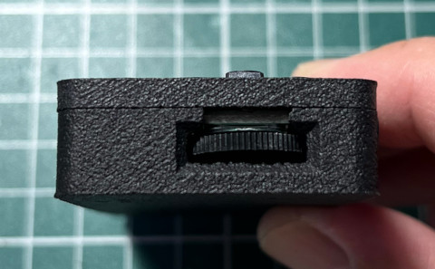
背面
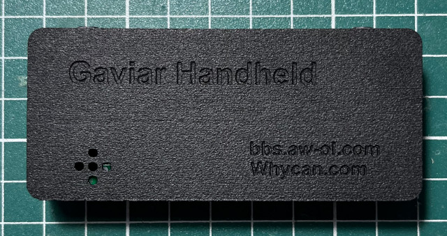
A面
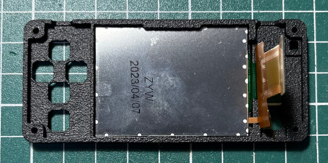
FPC
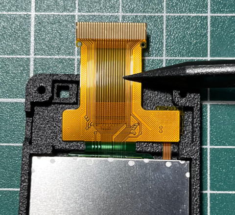
PCB
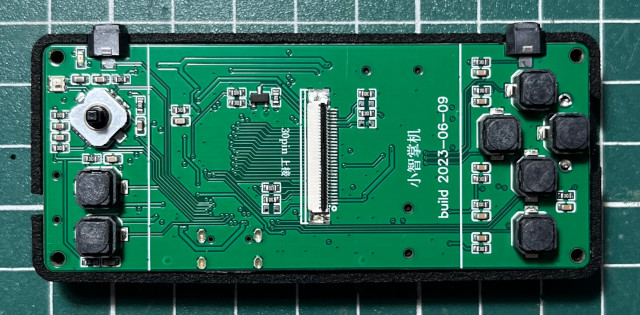
電源按鍵記得往下扳才能取出主板
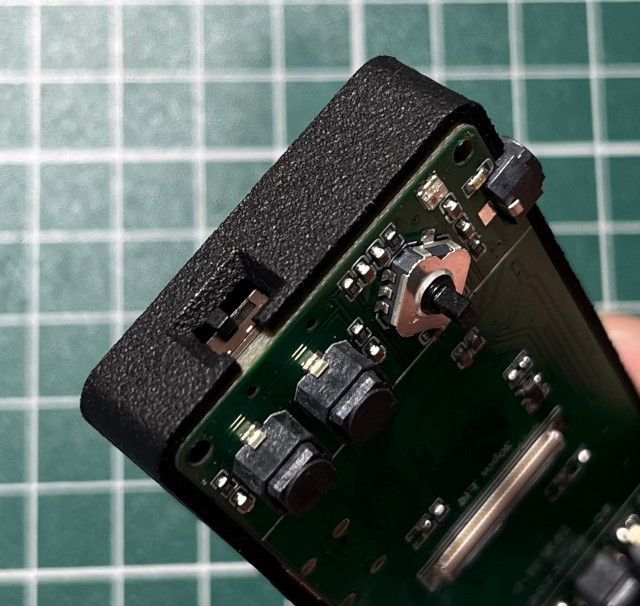
正面
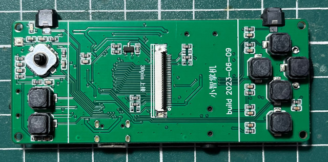
背面
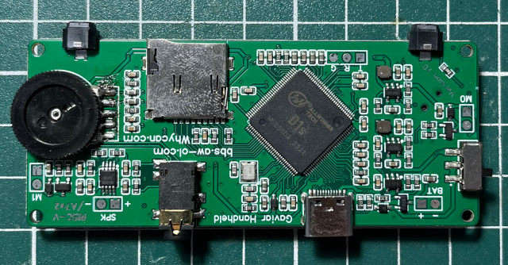
新增振動馬達的槽位
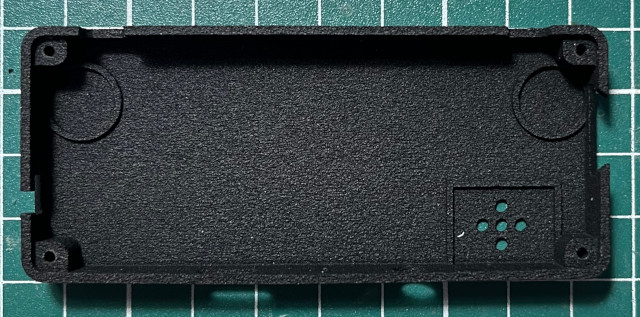
D1s(單核心RISC-V RV64GCV 533MHz, RAM 64MB)
F133(單核心RISC-V RV64GCV 533MHz, RAM 64MB)
T113-S3(双核心Cortex-A7 1.2GHz, RAM 128MB)
以上3顆晶片都是相容的腳位，因此，玩家也可以替換成高效能的T113-S3進行移植
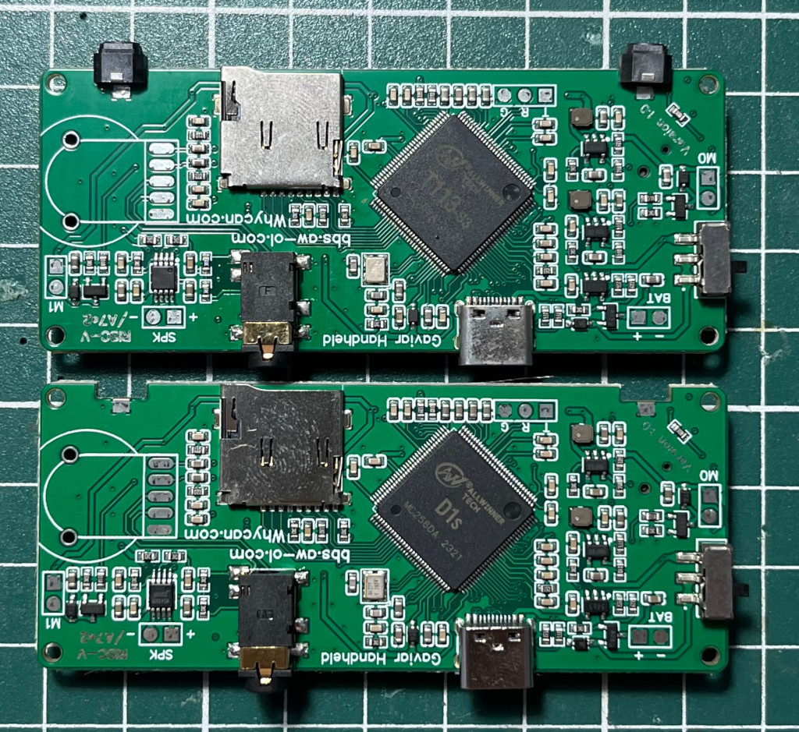
PCB
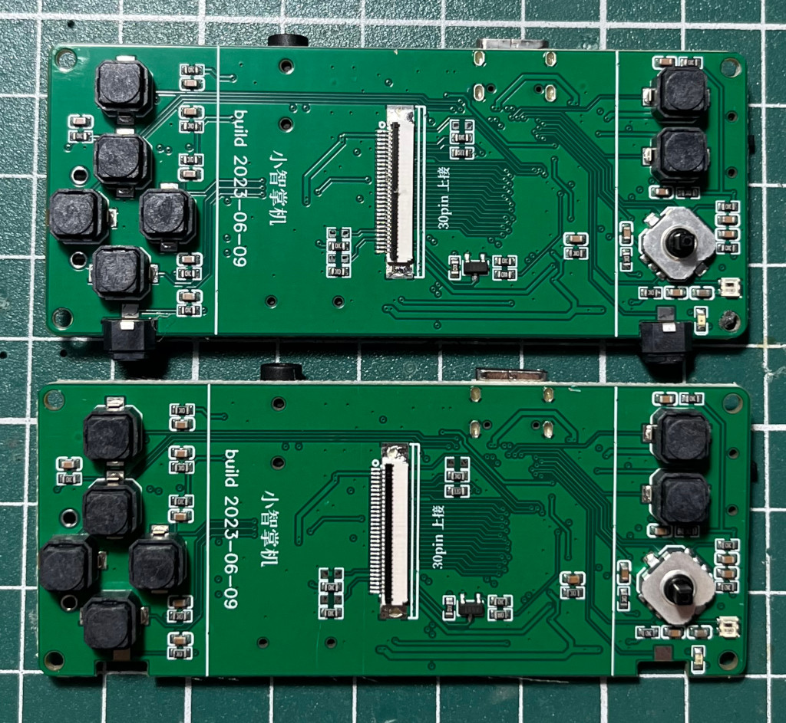